Facebook Messenger
Facebook Messenger lets you connect your business page to NexCognit so visitors can start conversations and receive automated support through Meta’s messaging channel. This guide walks through the setup process from Meta app creation to final connection in NexCognit.
Prerequisites
- You have access to a Facebook business account and a Facebook Page.
- You can sign in to Meta for Developers.
- You are ready to connect the page and complete the Messenger configuration in NexCognit.
Step 1 — Open Meta for Developers
Open developers.facebook.com in your browser to begin the Facebook Messenger setup process.

Step 2 — Open My Apps
From the top-right area of the Meta for Developers page, open My Apps.

Step 3 — Create a new app
Create a new Meta app for the Messenger integration.

Step 4 — Enter app details
Enter the app name and contact email details required for the new app.

Step 5 — Select the required use cases
Choose the Facebook Messenger and Instagram related use cases needed for the integration.

Step 6 — Select the business
Choose the business account that will own the app.

Step 7 — Continue without extra requirements
If no additional requirement is needed on that screen, continue to the next step.

Step 8 — Create the app
Confirm the setup and create the Meta app.

Step 9 — Review the app dashboard
Once the app is created, you will land on the app dashboard.

Step 10 — Open App Settings → Basic
Open the app’s Basic settings from the sidebar.

Step 11 — Add the privacy policy URL
The app must include a privacy policy URL in the basic settings.

Step 12 — Save the changes
After entering the privacy policy URL, save the app settings.

Step 13 — Open the Publish section
Go to the publish section to make the app live.

Step 14 — Publish the use case
Review and publish the required use case.

Step 15 — Confirm published status
The app should now show a published or live status.

Step 16 — Add Pages Read Engagement permission
Enable the required page engagement permission from the permissions and features area.

Step 17 — Open Messenger API settings
Open Messenger API Settings from the Meta app sidebar.

Step 18 — Configure the Messenger Webhook
To receive Facebook Messenger events, Meta requires a Callback URL and a Verify Token.
Copy the Callback URL below and paste it into the Callback URL field in the Meta Developer Portal.
https://portal.nexcognit.com/webhook/messenger-events
Enter any secure value as your Verify Token. Make sure you save this value, as the same Verify Token must be used later during the webhook verification process.
After entering the Callback URL and Verify Token, click Verify and Save (or Save, depending on the Meta Developer Portal screen) to complete the webhook configuration.

Step 19 — Connect the Facebook Page
Connect the Facebook Page that will be used with NexCognit.

Step 20 — Choose the page to connect
Select the correct Facebook Page from the connection flow.

Step 21 — Grant permissions
Meta will ask for permission approval during page connection, and you should continue through the permission flow.

Step 22 — Add subscriptions
After the page is connected, open the subscription setup.

Step 23 — Subscribe to messages
Enable the messages subscription so NexCognit can receive incoming Messenger messages.

Step 24 — Generate the page access token
The page access token can now be generated for the connected Facebook Page.

Step 25 — Copy the page access token
Copy the generated token because it will be needed in NexCognit.

Step 26 — Open NexCognit Channel Settings
Return to the NexCognit dashboard and open Channel Settings to configure Facebook Messenger.

Step 27 — Paste the Page ID and access token in NexCognit
In the NexCognit Facebook channel configuration, complete the following:
- Paste the Facebook Page ID.
- Paste the generated Page Access Token.
- Click Connect.
If the Facebook channel connects successfully, continue to Step 28.

Step 28 — Confirm the Facebook Channel Connection
Check the Facebook channel status in NexCognit.
If the status shows Connected, your setup is complete and you do not need to continue with the remaining troubleshooting steps.
If the channel does not connect, continue to Step 29.
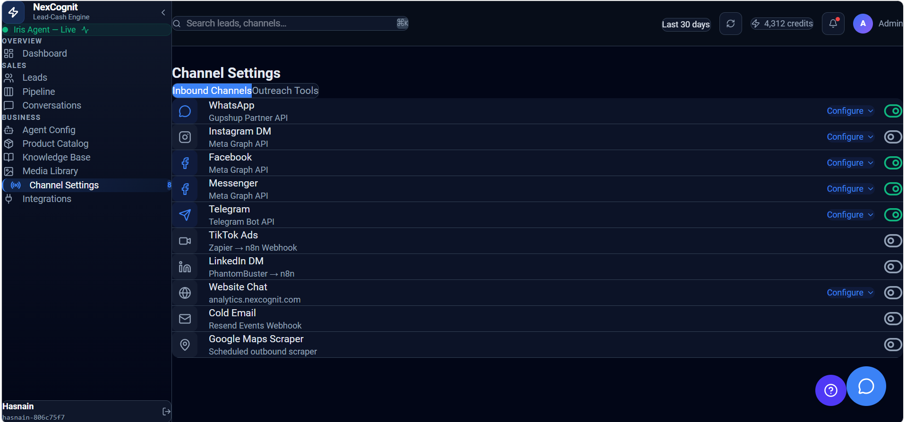
Step 29 — If the Connection Fails
Sometimes Meta does not immediately activate a newly generated Page Access Token. This is usually caused by one of the following:
- Meta permission propagation.
- Meta security checks.
- Temporary Meta platform restrictions.
This is not an issue with NexCognit. If you receive this message, continue with the troubleshooting steps below.
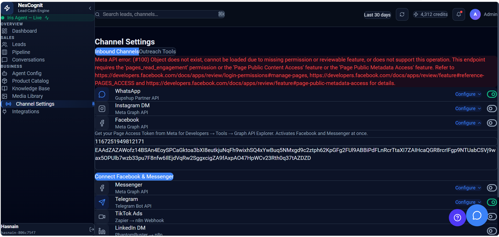
Step 30 — Open Graph API Explorer
Return to Meta for Developers. Open Tools, then select Graph API Explorer.
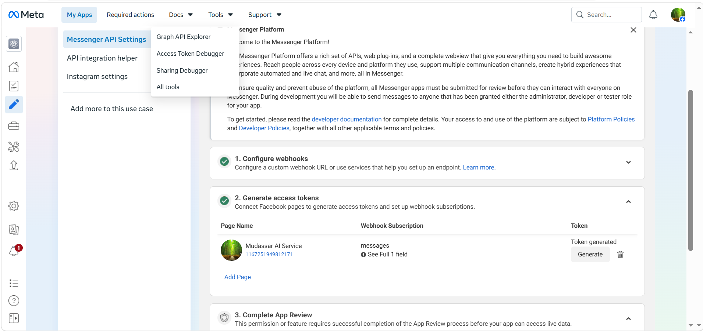
Step 31 — Generate a New Access Token
Click Generate Access Token.
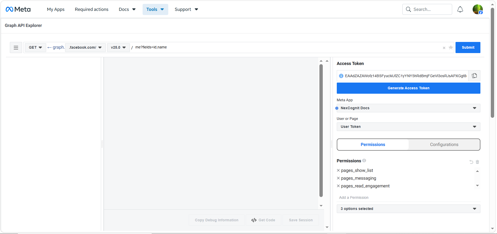
Step 32 — Continue with Your Facebook Account
Continue with your Facebook account.
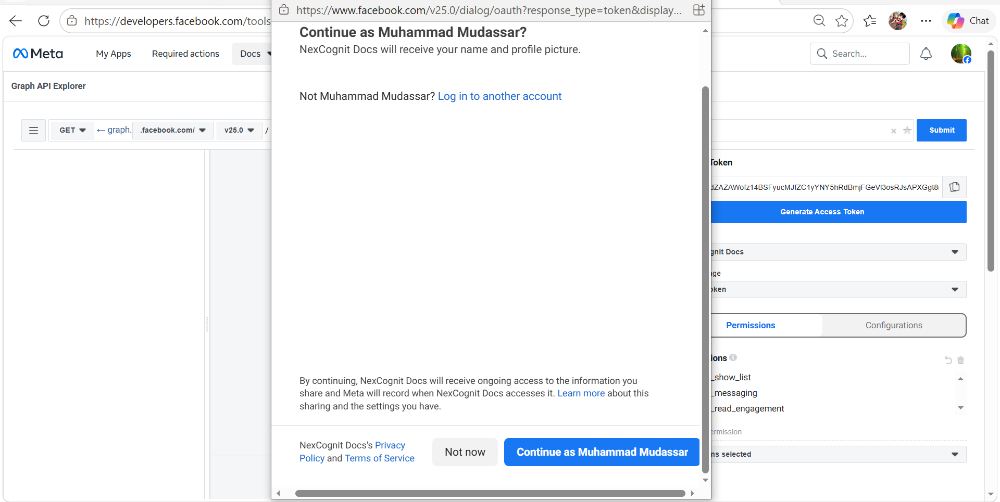
Step 33 — Select the Facebook Page
Select the Facebook Page you want to connect, then click Continue.
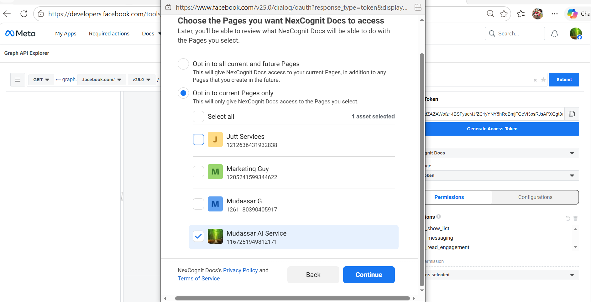
Step 34 — Save the Permissions
Click Save.
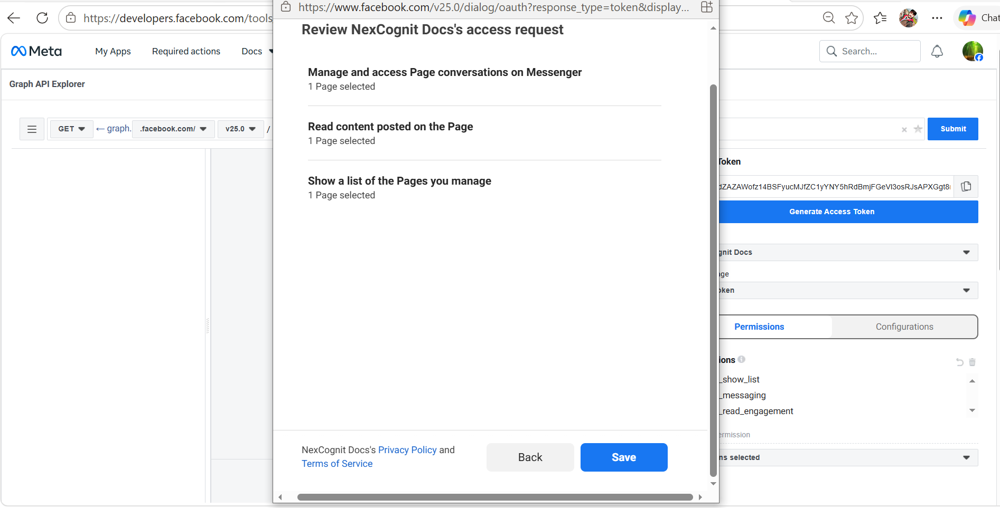
Step 35 — Confirm the Permissions
Click Got It.
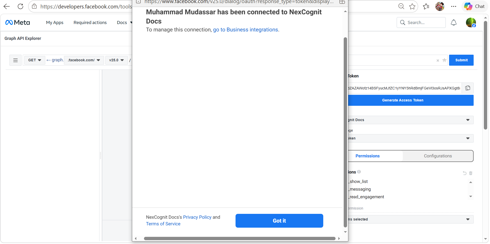
Step 36 — Copy the Updated Page Access Token
A refreshed Page Access Token has now been generated. Copy the new token.
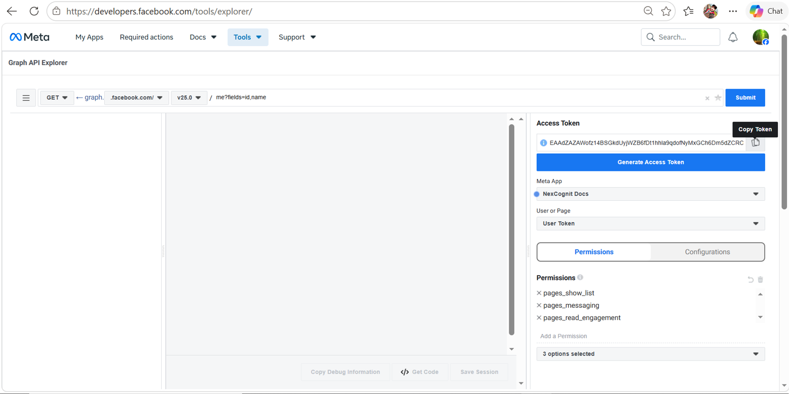
Step 37 — Paste the Updated Token in NexCognit
Return to the NexCognit Dashboard and open Channel Settings. Paste the newly generated Page Access Token, then click Connect.
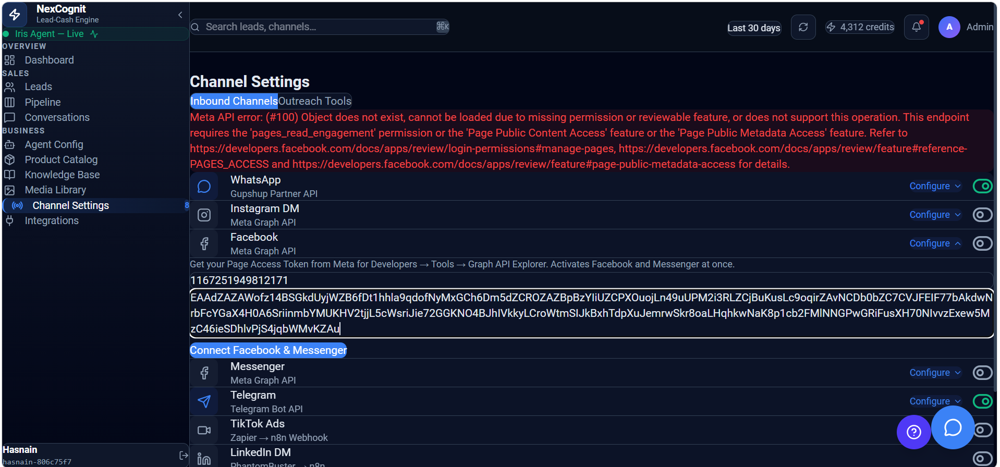
Step 38 — If the Connection Still Fails
In many cases, the refreshed token generated through Graph API Explorer will immediately resolve the issue.
If your Facebook channel now shows Connected, your setup is complete and you can ignore the remaining troubleshooting steps.
If you still receive an error, continue with the next steps.
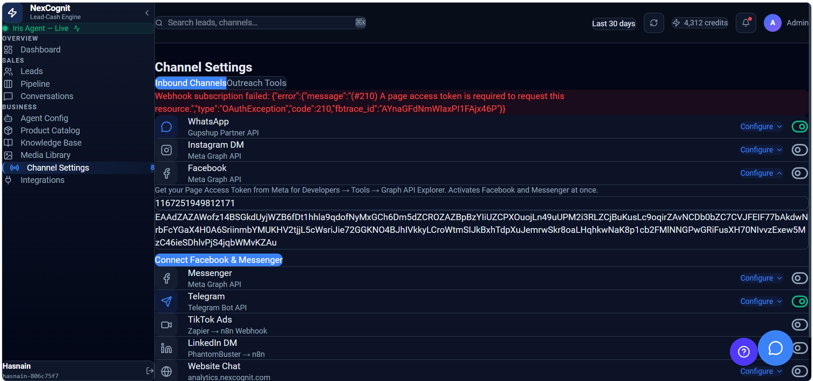
Step 39 — Open My Apps
Return to Meta for Developers and click My Apps.
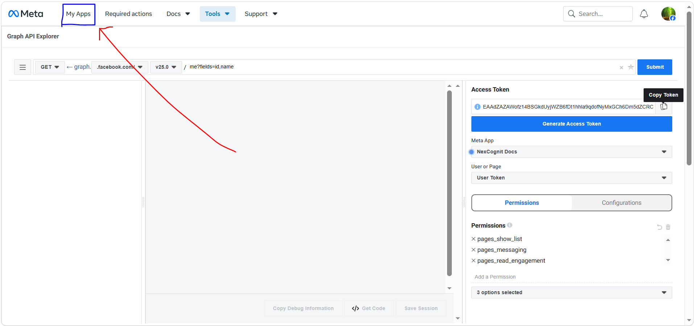
Step 40 — Select Your Meta App
Open the Meta App you created earlier.
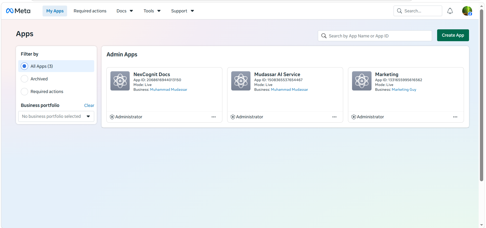
Step 41 — Open Use Cases
From the left sidebar, open Use Cases.
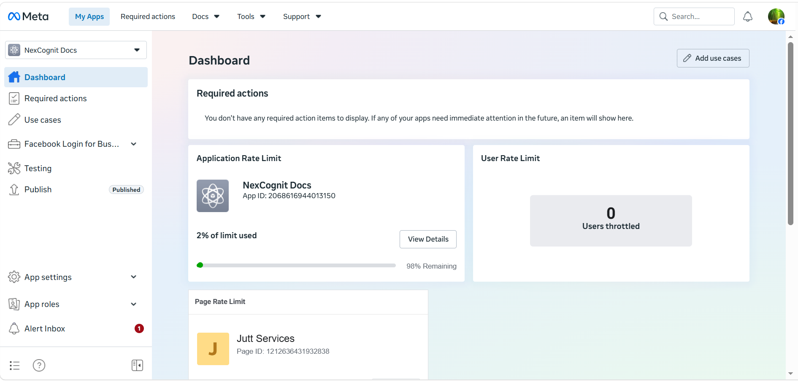
Step 42 — Customize Meta
Click Customize Meta.
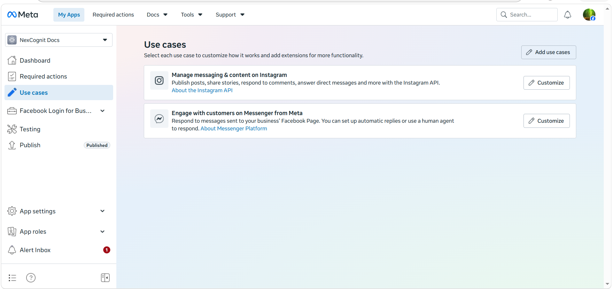
Step 43 — Open Messenger API Settings
Open Messenger API Settings.
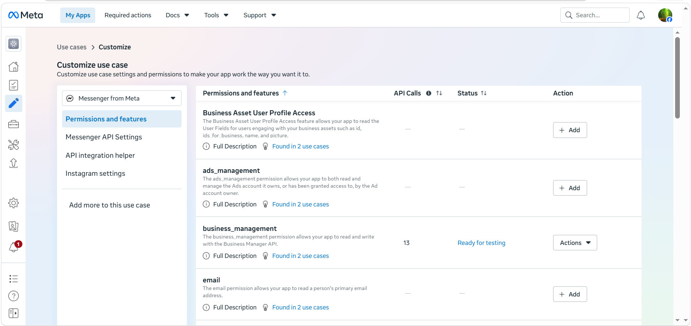
Step 44 — Generate a New Page Access Token
Generate a brand new Page Access Token again. Generating a fresh token from Messenger API Settings usually resolves Meta propagation delays.
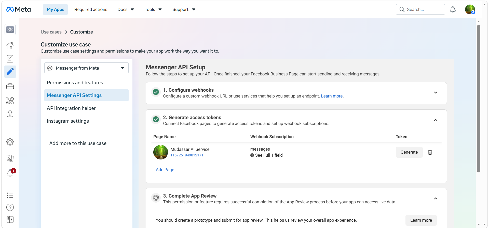
Step 45 — Copy the New Page Access Token
Copy the newly generated Page Access Token.
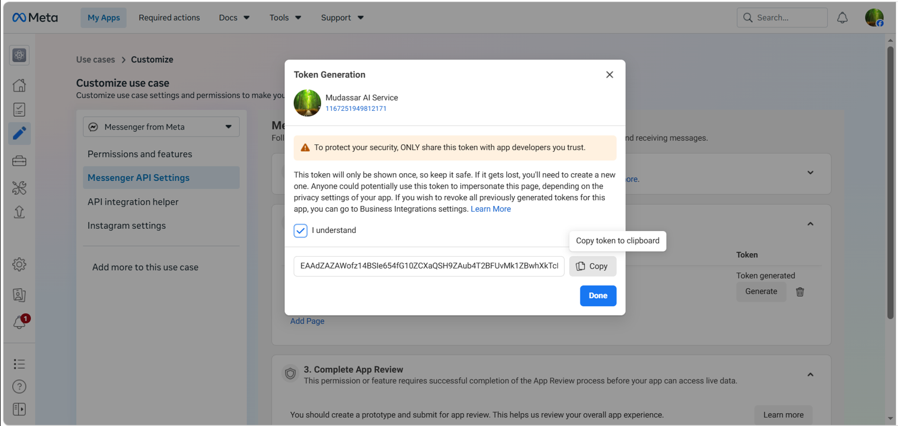
Step 46 — Paste the Final Token and Connect
Return to the NexCognit Dashboard. Replace the old token with the newly generated token, then click Connect.
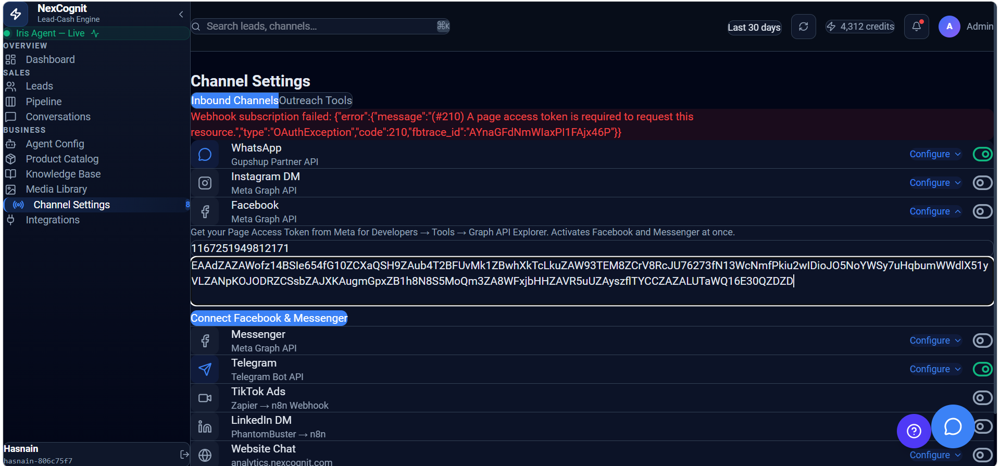
Step 47 — Confirm the Facebook Messenger Connection
The Facebook Messenger channel should now display Connected.
Thank you for your patience while completing the Facebook Messenger setup. Meta may occasionally require additional time to activate newly generated Page Access Tokens because of permission propagation and platform security checks. This behavior is controlled by Meta and does not indicate an issue with NexCognit.
Once the token has been refreshed and accepted by Meta, your Facebook Messenger channel is successfully connected and ready to receive conversations.
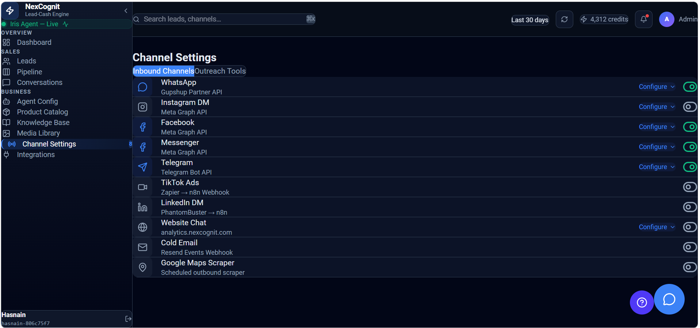
How Facebook Messenger works after setup
Once the channel is connected, visitors can start conversations from your Facebook Page and NexCognit can respond with the configured assistant behavior. The conversation is then available in the NexCognit interface for review and follow-up.
Things to know
- Keep the verify token consistent if your webhook setup requires it.
- Make sure the Facebook Page is connected and the required permissions are granted.
- After saving the configuration, test the page by sending a message through Facebook Messenger.